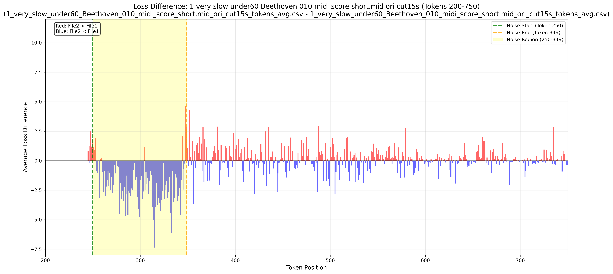
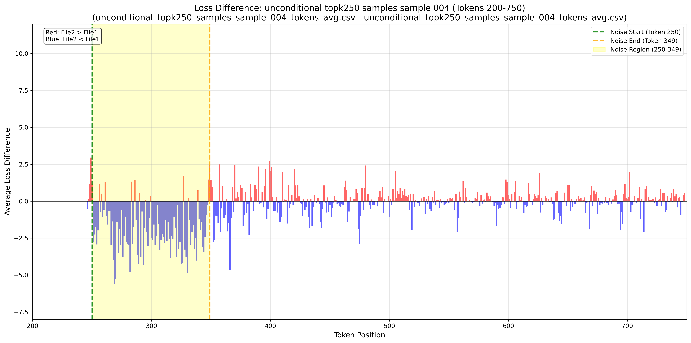
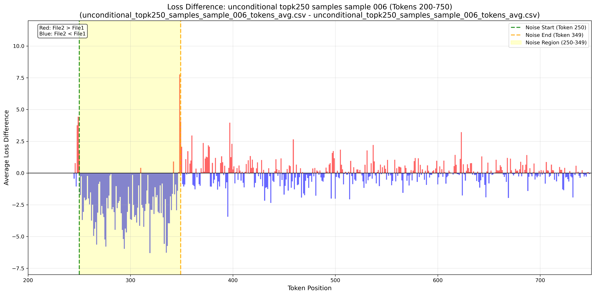
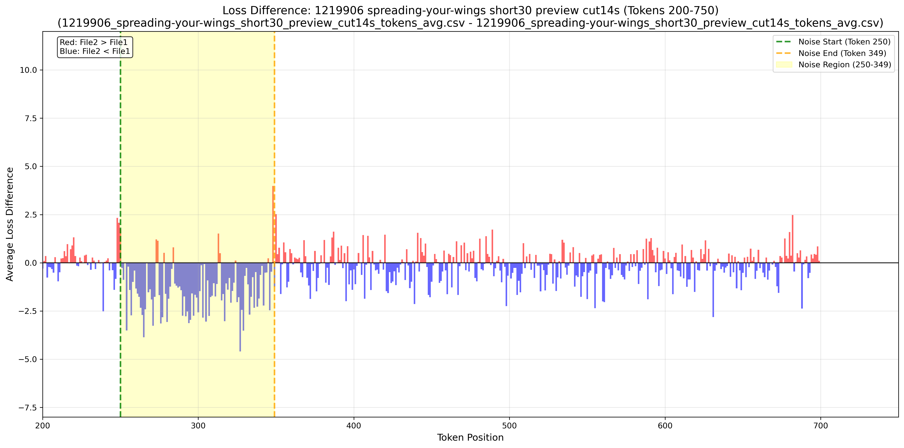
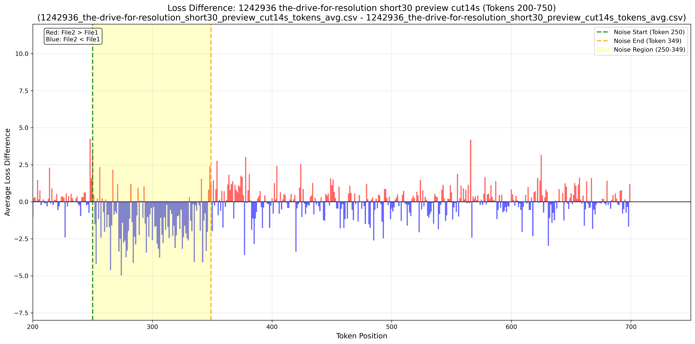
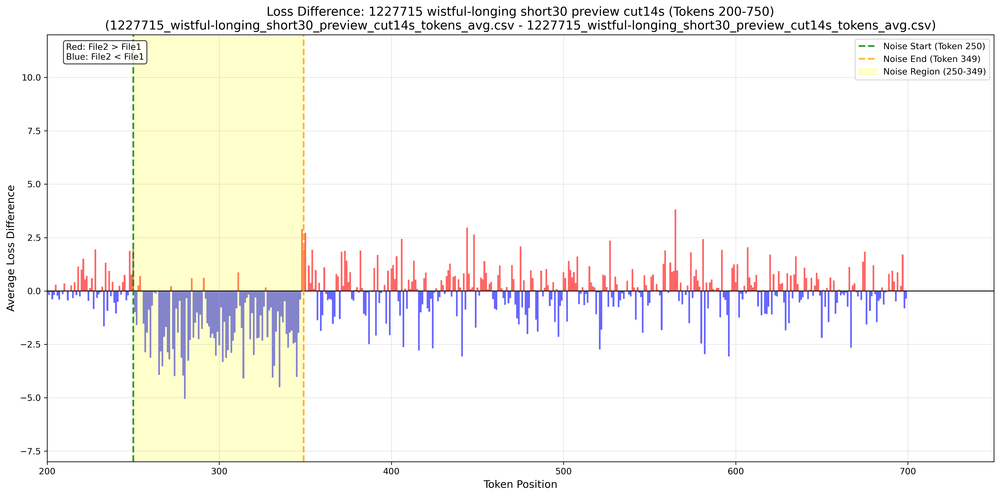
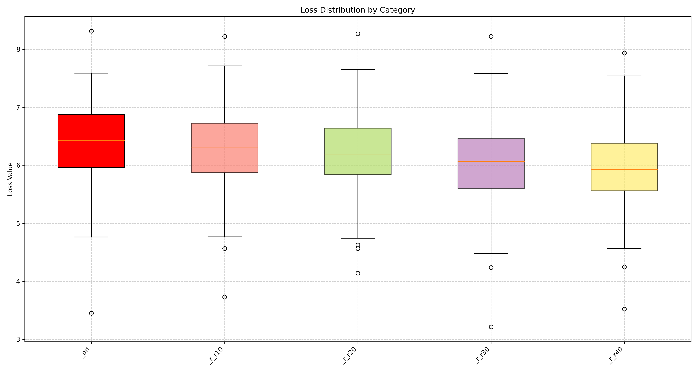
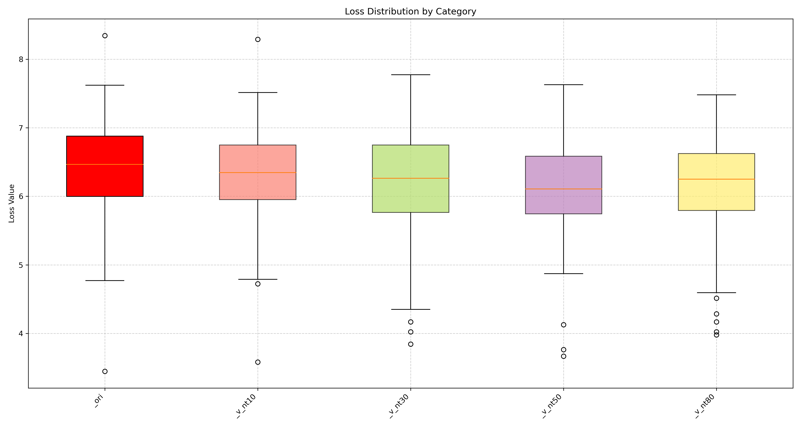
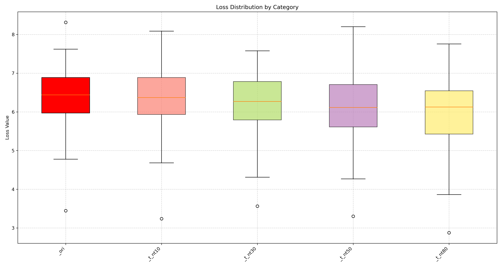

WHEN NOISE LOWERS THE LOSS
Rethinking Likelihood-based Evaluation in Music LLMs
Read the PaperAbout this Work
We discovered that injecting noise into music often lowers the loss in Music LLMs, making absolute loss unreliable for evaluation. Instead, the shape of the loss curve—its peaks and phases—provides more meaningful signals for evaluation. Here are supplementary materials and experiments to support this effect.
Noise Injection Experiment
When noise is injected, the model's loss first spikes, showing it detects inconsistency. But almost immediately the loss drops and stays low, because some forms of noise are actually easier for the model to predict than real music. After the noise ends, the loss returns to the musical context but with higher variance. This counterintuitive behavior—brief resistance, then forgetting and adapting to noise—reveals a fundamental limitation of likelihood-based evaluation in music LLMs.
Core result: after noise at 5s (~token 250), the loss quickly drops and stays low because noisy audio is easier to predict than real music.
Figure 1. Context Amnesia Effect.
Audio Demos & Loss Difference Analysis
When noise is injected, the model's loss first spikes, showing it detects inconsistency. But almost immediately the loss drops and stays low.
X-axis: tokens 200–750; noise at token 250. Loss difference stays ~0 before 250, then changes. Definition: Loss(music + perturb) − Loss(original).
OOD Datasets - Beethoven_010
Original
Noise Injected at 5 Seconds for 100 Tokens (2 Sec) Long
Loss Difference.
OOD Datasets - Chopin_073
Original
Noise Injected at 5 Seconds for 100 Tokens (2 Sec) Long

Loss Difference.
OOD Datasets - Schubert_062
Original
Noise Injected at 5 Seconds for 100 Tokens (2 Sec) Long
Loss Difference.
Generated Datasets - Topk = 250 - Sample 004
Original
Noise Injected at 5 Seconds for 100 Tokens (2 Sec) Long
Loss Difference.
Generated Datasets - Topk = 250 - Sample 005
Original
Noise Injected at 5 Seconds for 100 Tokens (2 Sec) Long

Loss Difference.
Generated Datasets - Topk = 250 - Sample 006
Original
Noise Injected at 5 Seconds for 100 Tokens (2 Sec) Long
Loss Difference.
Training Datasets - Spreading Your Wings
Original
Noise Injected at 5 Seconds for 100 Tokens (2 Sec) Long
Loss Difference.
Training Datasets - The Drive for Resolution
Original
Noise Injected at 5 Seconds for 100 Tokens (2 Sec) Long
Loss Difference.
Training Datasets - Wistful Longing
Original
Noise Injected at 5 Seconds for 100 Tokens (2 Sec) Long
Figure 1. Loss Difference.
Loss under Different Noise Injection
Across blue/pink/brown noise types, CE loss remains steady.
Figure 2-1. Loss under Different Noise Injection - OOD Datasets.
Figure 2-2. Loss under Different Noise Injection - Generated Datasets.
Figure 2-3. Loss under Different Noise Injection - Training Datasets.
Loss Curve Dynamics
Three phases: Peak → Assimilation → Recovery.

Figure 3. Loss Curve Dynamics.
Supplement Experiments 1
Additional tests (rhythm deletion, velocity, structure) further show absolute loss is unreliable.
Rhythm Deletion
Original
Rhythm deletion for 40 percents of the original music.
Figure 4-1. Rhythm Deletion.
Note Velocity Change
Original
Note velocity changed for 80 percents of the original music.
Figure 4-2. Note Velocity Change.
Structure Change
Original
Structure changed for 80 percents of the original music.
Figure 4-3. Structure Change.